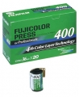

Fujifilm Fujicolor Press 400 Prof. 专业彩色负片，高速，高宽容度。
第一感觉就是对色温极其敏感，不知道算缺点还是优点。至少对我这样的业余玩家是大大的缺点，在一卷里有的蓝得厉害，有些黄得厉害，不方便。
对400来说，颗粒比较细。400的速度，配1.4的光圈，适合大多场合了，色彩还原不错。
色温太过敏感。在阴天的黄昏下，整个片子的色调接近灯光片拍日光。在室内条件下，一切都是黄的。